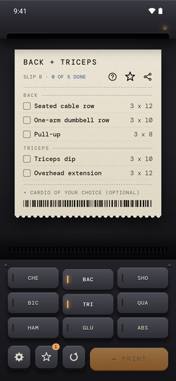
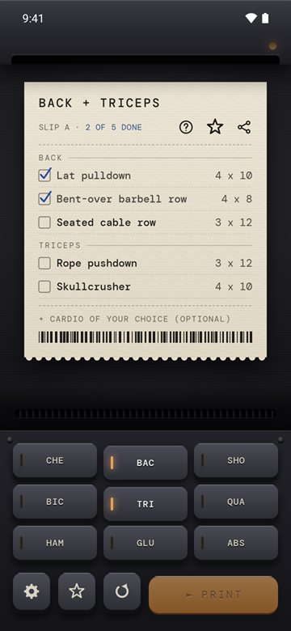

Senior QA Engineer Test Automation · AI-Driven QA
Eduardo Vedovatto
10+ years in QA across fintech, payments and automotive. Web and API automation in CI (Playwright, Cypress, Java + REST Assured), AI applied to QA with human review, and a hands-on exploratory eye for what automation misses.
- Open to work
- Remote, Porto Alegre, Brazil (UTC-3)
- ISTQB CTFL
- English C2
Resume (PDF) ↗
LinkedIn ↗
GitHub ↗
Projects
Mobile · Android
Setslip: my own Android app, tested end to end
An app that builds workout sheets and "prints" each one on a thermal printer drawn on screen. I built it AI-driven with automation in mind: it was designed to be testable from day one.


- The app exposes stable IDs and the screen state: tests wait for outcomes, not fixed delays. No XPath, no Thread.sleep.
- Every scenario starts from a clean app without opening a new Appium session. Failures come with a screenshot, view hierarchy, logcat and video.
- Accessibility tested: 48dp touch targets, content descriptions and screen reader announcements.
- E2E scenarios (Gherkin)
- 52
- unit tests
- 34
- emulator in CI
- API 36
- smoke in CI
- every night
Appium 3 · UiAutomator2 · Cucumber · Java 17 · Kotlin · Jetpack Compose · GitHub Actions
Repository ↗
Suite decisions ↗
Scenarios ↗
CI runs ↗
Download the APK ↗
Web + API
Juice Shop: one shop, tested through the UI and the API
Automated tests for OWASP Juice Shop, an online shop built with flaws on purpose, showing what belongs in the UI and what belongs in the API.
- UI tests cover only what the UI alone can show: error messages, redirects and the purchase end to end. Business rules, permissions and contracts live in the API tests.
- Every test creates its own user through the API (checkout tests also create the address and card). Main responses checked against JSON schemas, plus 400, 401, 404 and broken access control (one user reading or deleting another user's data, IDOR).
- The app's built-in bugs became 13 tests of the correct behavior. They run in a separate CI pass that doesn't block the build and flags any that get fixed. Accessibility checked with axe (WCAG 2.1 AA).
- UI tests
- 25
- API tests
- 35
- known-issue tests
- 13
- regression in CI
- ~1 min
Playwright · TypeScript · Gherkin (playwright-bdd) · REST Assured · Java 17 · axe · GitHub Actions · Docker
Repository ↗
Strategy ↗
Bugs the suite exposes ↗
CI runs ↗
Latest test report ↗
In both projects, a bug found becomes a test of the correct behavior, tagged as a known issue. Those tests run in a separate pass: they don't block the build and flag when the bug gets fixed.
Experience
-
Apr 2026 - Sep 2026
Trustly
QA Engineer
Global payments fintech. Built custom Claude Code skills for day-to-day QA (daily ticket briefing, documentation analysis, Jira-based shift-left monitoring) and, after finding about 84% of the documentation had not been updated in over two years, a solution that suggests updates with each delivery. Extended the Java automation (Selenium, REST Assured + JUnit) and did hands-on manual testing, including mobile validation on iOS and Android.
-
Oct 2025 - Mar 2026
GOW
Senior QA Engineer · contractor
Built automation from scratch with Playwright (Page Object), integrated into CI/CD on Azure DevOps, across several projects including a US fintech. APIs automated with Java + REST Assured or Postman, depending on the project. Structured the core layers in about three weeks and used Playwright MCP to map the system and generate tests from its flows, reviewing all AI output.
-
Jan 2023 - Jun 2025
Zallpy Digital
Senior QA Engineer
Americas project (TicketLog). Automated test-data generation via API, cutting preparation time by about 70%; introduced a Definition of Done and systematic defect analysis (about 80% of issues were frontend). Also led the project's QA team of five.
-
Jun 2022 - Sep 2022
Reclame Aqui
QA Engineer
Functional and API testing with Postman, with SQL data validation.
-
Feb 2016 - May 2022
Zallpy Digital
QA Engineer and Junior Developer
Clients included BMW Group, TicketLog and ADP Brasil (ERP): test plans, regression, UI automation with Robot Framework and API testing with Postman/Newman.
About
I work across the whole quality lifecycle on Brazilian and global projects: refinement and acceptance criteria, test planning, Definition of Done and shift-left.
I automate web and APIs integrated into CI/CD, with defect analysis and quality indicators to guide the team. I use AI in the QA workflow to map systems, generate tests and analyze incoming work, and I review everything it produces.
How I work
- A bug that only showed up on slow connections: I throttled the network in the browser, found two dependent requests finishing out of order, and gave developers exact repro steps.
- Test data was the bottleneck on TicketLog (different rules per country): generating it through the API cut preparation time by about 70%, first for developers, then for QA.
- Defects were found too late: analysis showed about 80% came from the frontend, so I introduced a Definition of Done, checklists and workshops to prevent them at the source.
What I test
- Fintech and payments End-to-end testing at a global payments fintech, including manual mobile validation on iOS and Android (TestFlight, BrowserStack), and automation at a US fintech.
- Defect analysis Finding where bugs come from and driving prevention with the dev team.
- Integrations and APIs REST APIs automated with Java + REST Assured and JUnit running in the pipeline; status codes, payloads, errors and negative cases. Test data generated through the API (TicketLog).
- Process Acceptance criteria during refinement, Definition of Done and testing from the start (shift-left).
- Manual and exploratory testing Every feature gets checked by hand first; whatever needs frequent validation or can't break goes into automation.
Tools
- Automation
- Playwright, Cypress, Selenium, Robot Framework, Gherkin, JMeter
- API
- Java + REST Assured + JUnit (in CI/CD) · Postman/Newman, Bruno
- CI/CD
- GitHub Actions, Azure DevOps, Docker, Git
- Test management
- Jira, Zephyr
- AI in QA
- Claude Code (custom skills), GitHub Copilot, Playwright MCP, AI agent workflows
- Languages
- JavaScript, Java, SQL
- Personal projects (GitHub)
- Appium, Cucumber, TypeScript